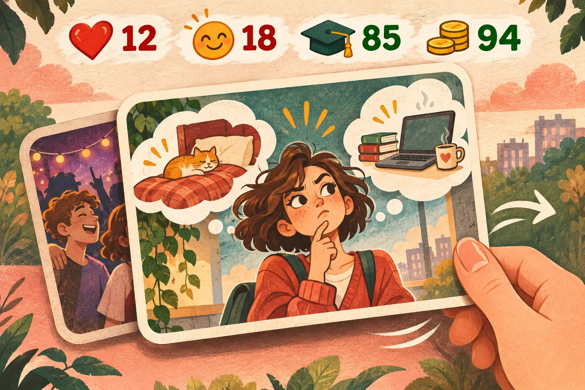

Родился.
Попозорился.
Умер.
Как мы с Ириной придумали игру, которую хотели наконец доделать.
После пары неудачных попыток сделать игру мы с моей подругой Ириной задумались: какую бы игру придумать попроще, чтобы на этот раз точно её доделать? Так появилась LifeSim — история о целой жизни, которую можно прожить заново.
Мы взялись за разработку вместе: Ирина отвечает за нарратив, художественное оформление и маркетинг. Из простой задумки постепенно выросла игра с узнаваемыми ситуациями, иронией и решениями, о которых иногда лучше не рассказывать родственникам.
В LifeSim жизнь складывается из карточек событий: свайпай, делай выбор, развивай навыки и наблюдай, как решения меняют здоровье, деньги и историю персонажа. А если всё пошло не по плану — всегда можно начать ещё одну жизнь.
